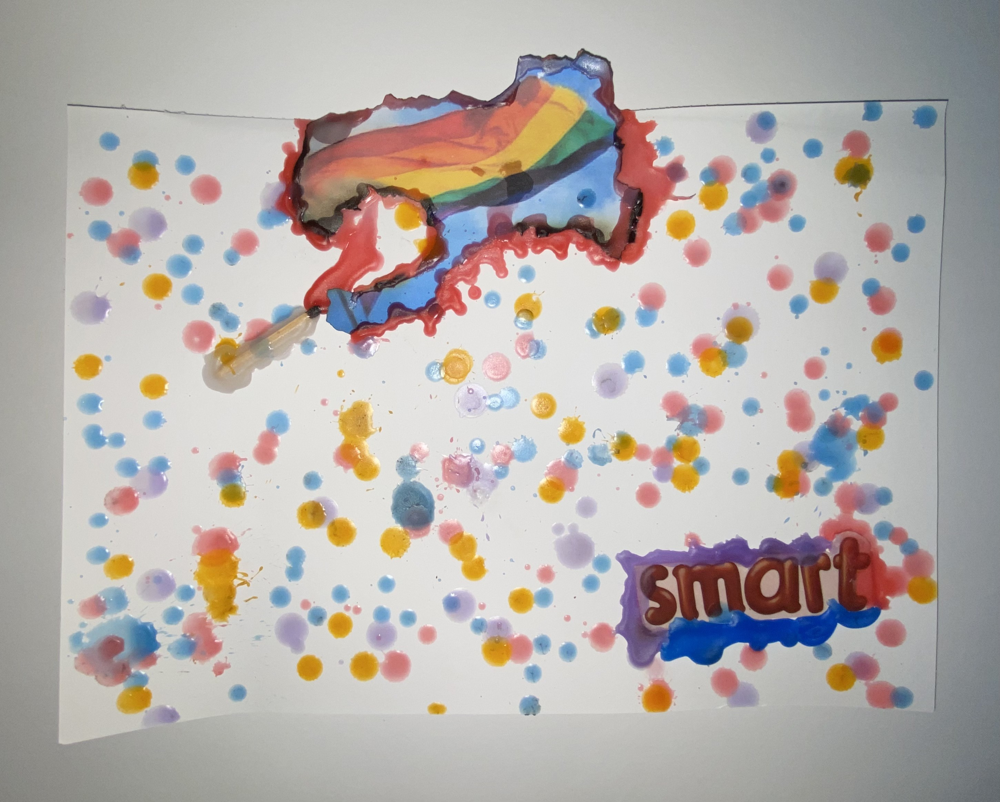
DMIS# 01Jan
Artwork by Jan
Burnt Flag, Wax & Assemblage
View Artwork & Rationale →
“An online exhibition exploring identity, belonging, acceptance and exclusion through candle wax assemblages, found materials, and personal rationales.”
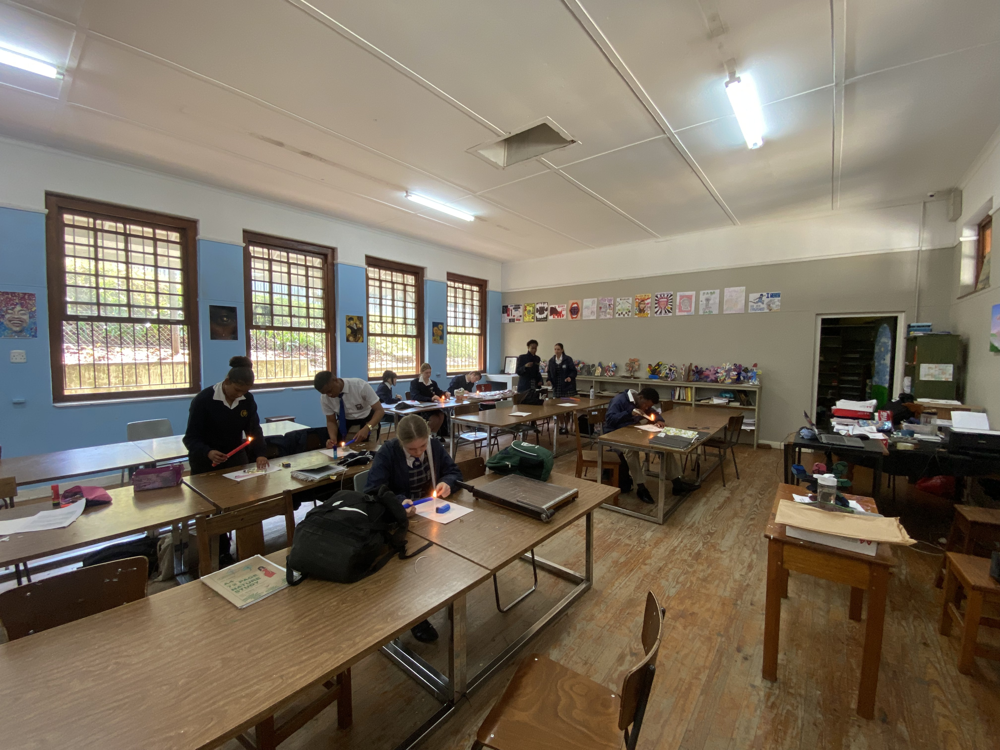
Does My Identity Have Space? is an online exhibition exploring identity, belonging, acceptance and exclusion through the artworks of Grade 11 Visual Arts learners. Inspired by the contemporary South African artist Snelihle Maphumulo, the exhibition encourages learners to consider which parts of their identities are celebrated by society and which may be misunderstood, rejected or excluded.
The learners created small assemblages using candle wax and found materials, exploring how everyday materials can carry personal, cultural and symbolic meanings. Through their artworks and written rationales, they communicate personal reflections on identity while experimenting with materials beyond traditional art-making practices.
The exhibition also introduces Maphumulo's artistic practice and explores how her use of found and organic materials influenced the learners' creative process. Through the combination of artwork, written reflections, video and audio, Does My Identity Have Space? creates a space for learners to explore who they are, question social expectations and understand how art can become a powerful form of communication and social discussion.
Click any artwork card to examine the photograph in high resolution and read the student’s complete written rationale.

DMIS# 01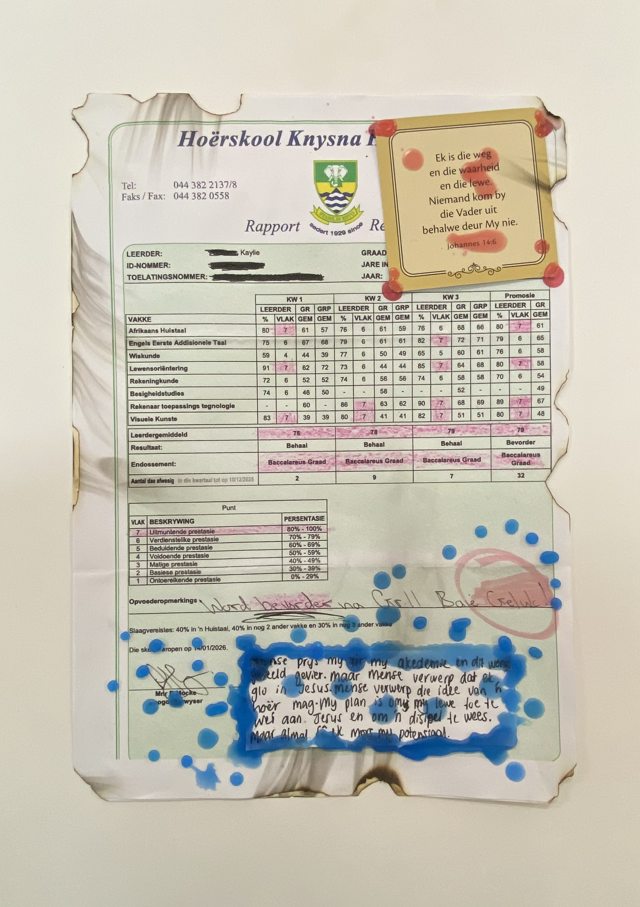
DMIS# 02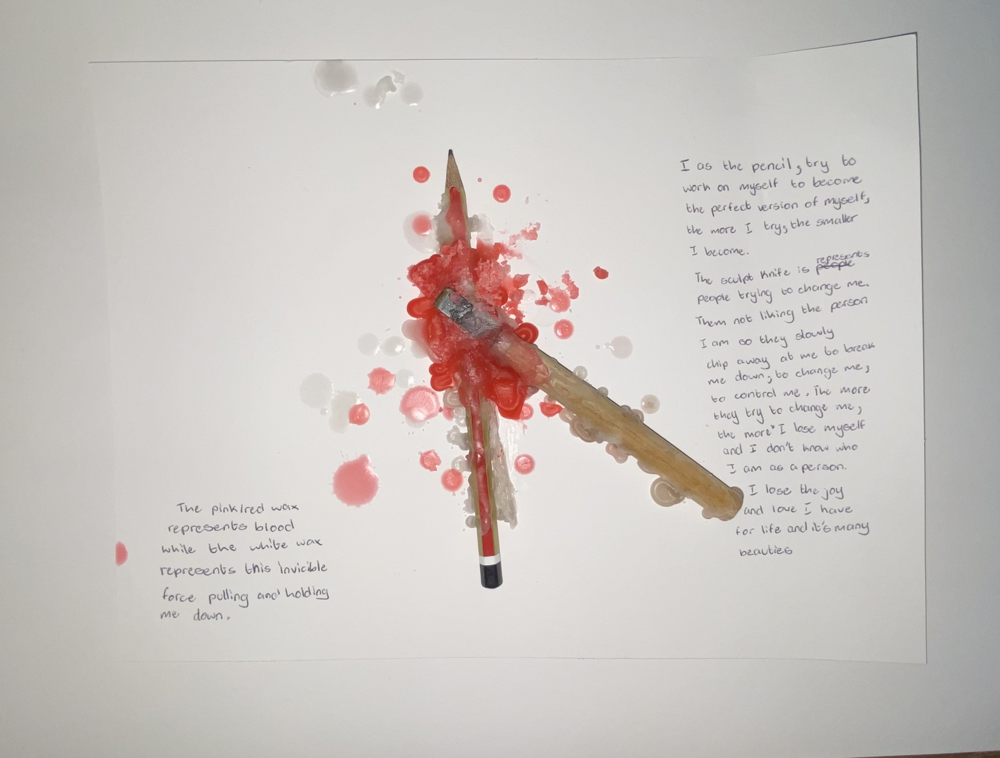
DMIS# 03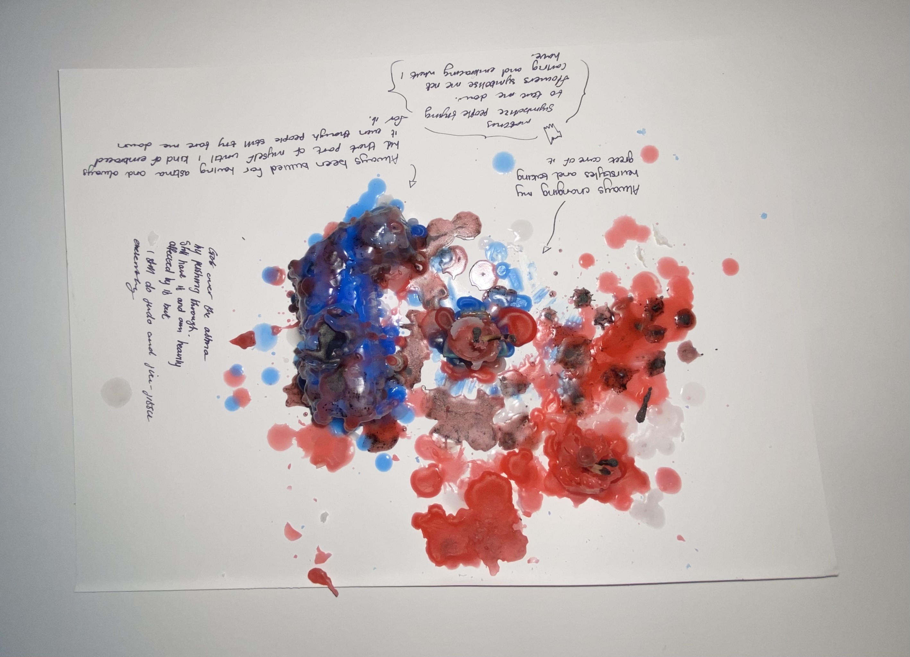
DMIS# 04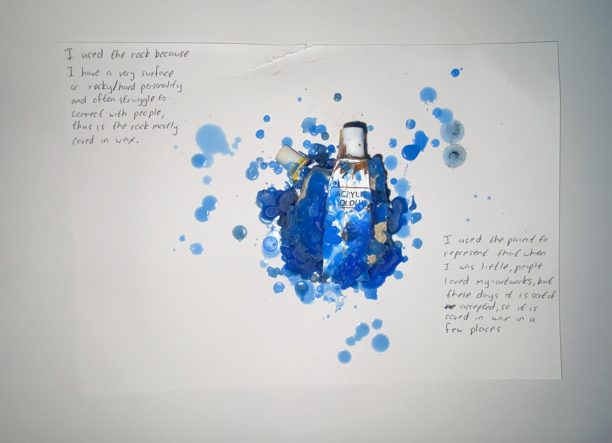
DMIS# 05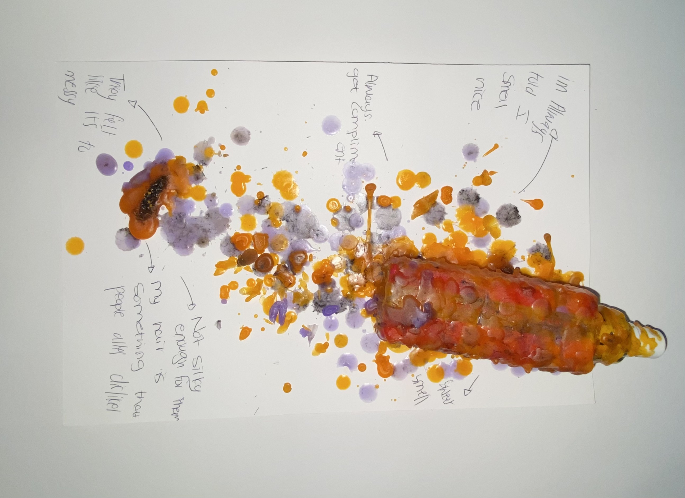
DMIS# 06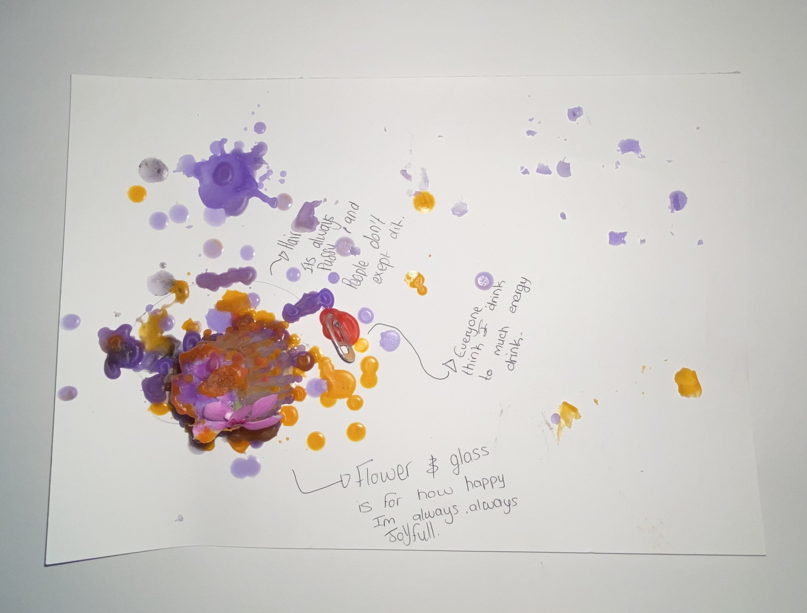
DMIS# 07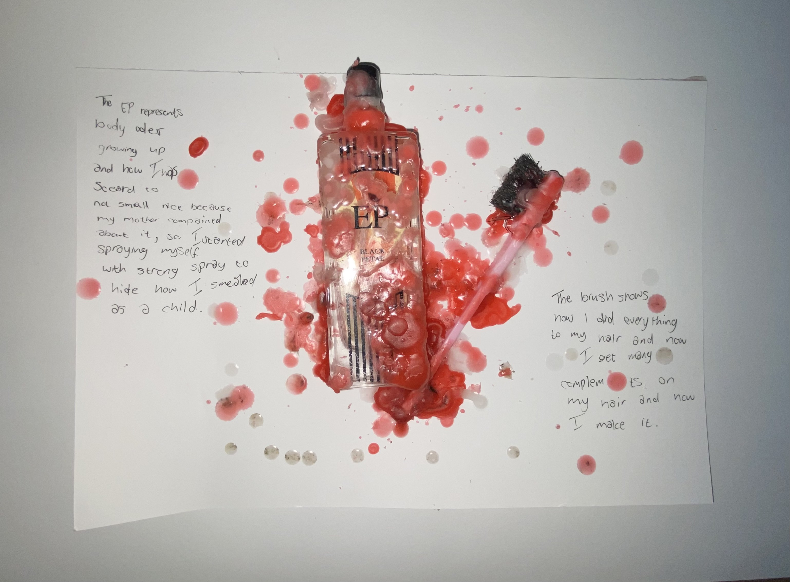
DMIS# 08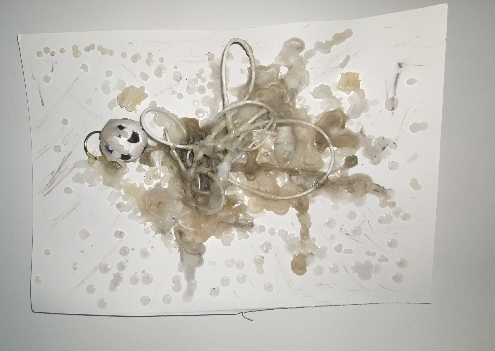
DMIS# 09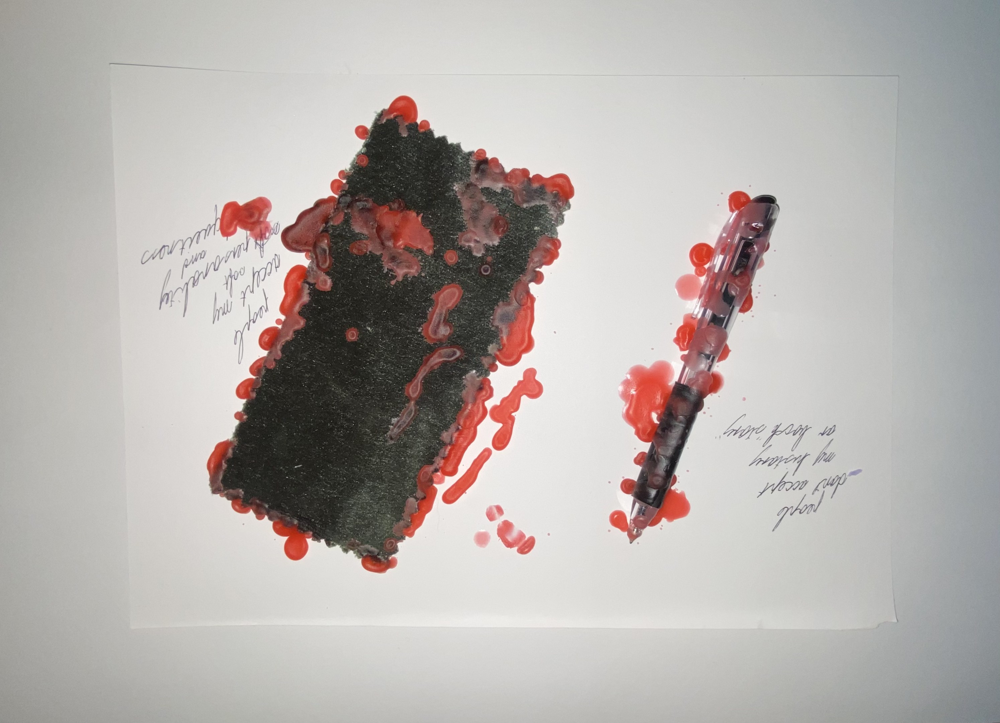
DMIS# 10Snelihle Maphumulo influenced this project through her meaningful use of unconventional materials, such as candle wax and found organic objects, which are not often associated with traditional gallery art. Her practice encouraged the learners to look beyond materials such as paint and canvas and consider how the texture, history and symbolism of an object can strengthen an artwork’s meaning. This inspired learners to use candle wax and found materials purposefully when exploring identity, acceptance and exclusion.
Snelihle Maphumulo in the studio working with wax, natural materials, and sculptural assemblage.
Recorded conversation with visiting artist Snelihle Maphumulo and Grade 11 Visual Arts learners discussing ready-mades, materiality, and the elasticity of Zulu tradition.
Click any image to enlarge and view in full resolution.
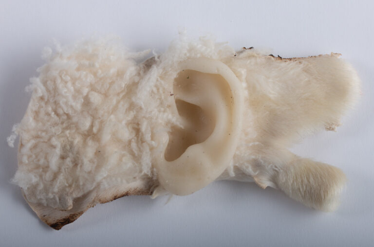
SM# 01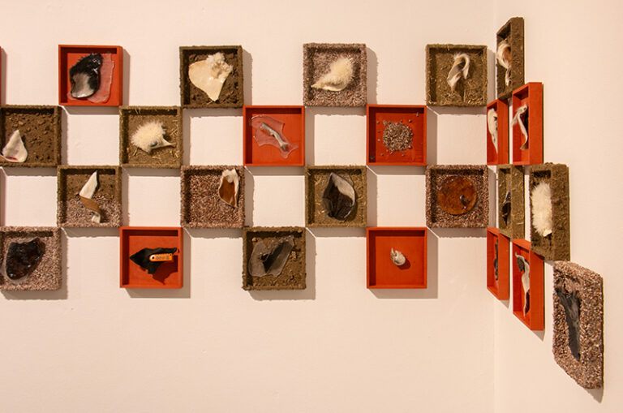
SM# 02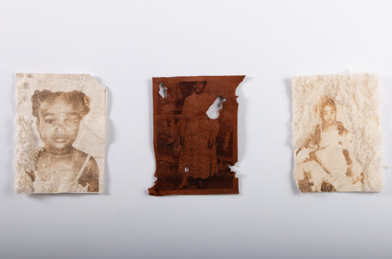
SM# 03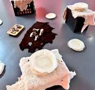
SM# 04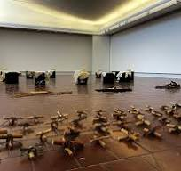
SM# 05During the project, the students wondered how to display their heavy artworks, which could not easily be hung on a wall. This led them to think back to Snelihle Maphumulo’s work and to recognise that her installations were not traditionally displayed on gallery walls. This sparked an engaging discussion about how contemporary art can challenge traditional ideas of how art should be made and displayed.
The students reflected on how materials such as wax, found objects and other unconventional materials can be used to create powerful and meaningful artworks. They also realised that an artwork does not necessarily have to hang on a white gallery wall to be considered art. This made them excited about completing more projects using materials that are not typically associated with traditional art-making and gave them greater confidence to experiment with different ways of creating and displaying their work.
Overall, the students enjoyed engaging with the work of a young South African artist who is successfully pursuing a career in the arts. They particularly enjoyed drawing inspiration from Maphumulo’s materials and artistic practice and applying these ideas to their artworks.